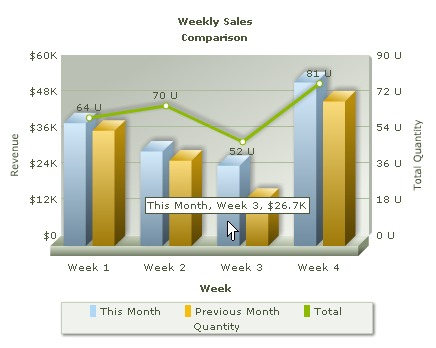

FusionCharts PHP Class API > Creating Combination Chart |
||||||||||||||||||||||||
Combination chart has two Y-axis. The Y-axis on the left hand side is called Primary Y-Axis and that on the right hand side is called Secondary Y-Axis. Combination charts are used when we intend to compare two different types of data on the same chart, e.g., if we want to plot Weekly Sales Revenue of two consecutive months and total units sold on the same chart, we have to use a Combination Chart. See the image below and note that the two Y-axis are representing different data units. |
||||||||||||||||||||||||
|  | ||||||||||||||||||||||||
| Let's add some more data to the existing Table for Multi-series chart. We would add a column that tabulates Total Qunatity Sales. | ||||||||||||||||||||||||
|
||||||||||||||||||||||||
| Before you go further with this page, we recommend you to please see the previous pages "Creating First Chart " & "Creating Multi-series chart" as we start off from concepts explained in that page. | ||||||||||||||||||||||||
Here is the code that builds up this Combination chart: |
||||||||||||||||||||||||
<?php # Include FusionCharts PHP Class # Create Column 3D + Line Dual Y-Axis Combination Chart # Set chart attributes # Add a new dataset with dataset parameters # Add aother dataset with dataset parameters # Add third dataset for the secondary axis ?>
<?php </body> |
||||||||||||||||||||||||
As you find in the above code, creating Combination charts is similar to creating Multi-Series charts. Here too, there are multiple datasets. Some datasets are specified for primary Y-Axis and some conform to the Secondary Y-Axis. We need to specify which dataset belongs to which Y-Axis. Let's see how we did that in the following steps.
|
||||||||||||||||||||||||
| Please go through FusionCharts PHP Class API Reference section to know more about the functions used in the above code. | ||||||||||||||||||||||||
| This code renders the Combination Chart that we needed. | ||||||||||||||||||||||||